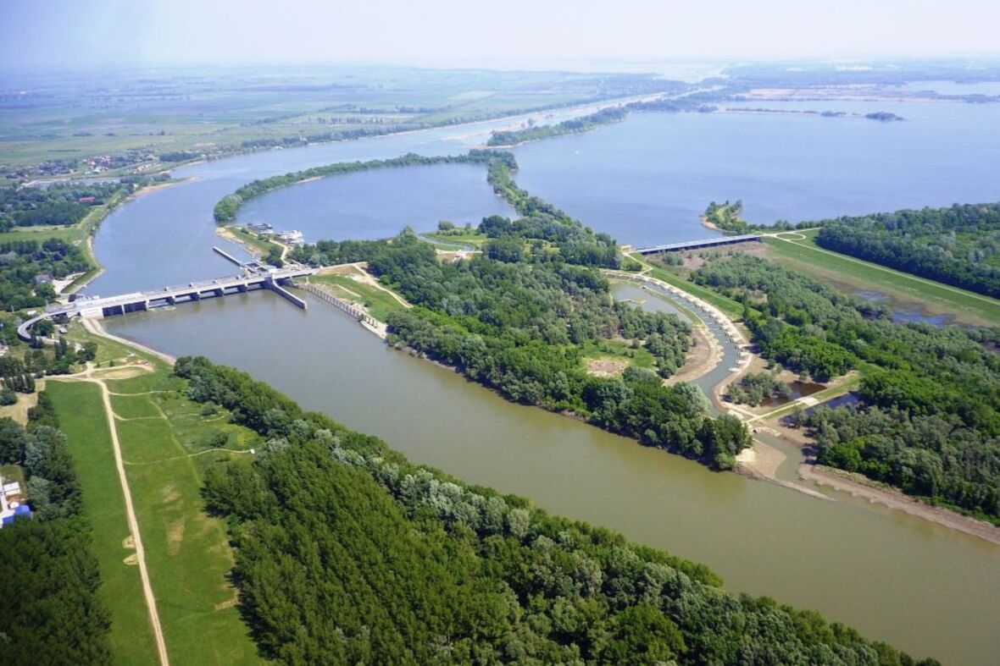
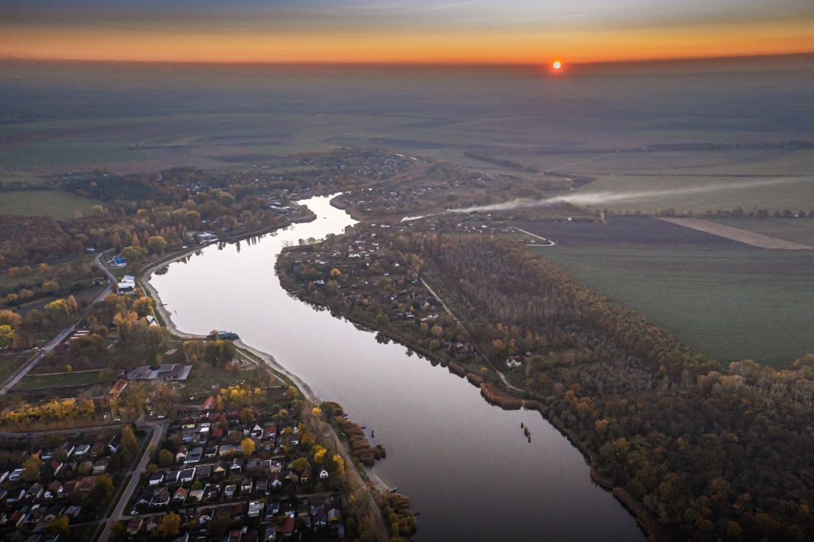

Magyarország legnépszerűbb tavai
Balaton

A Balaton (költői nevén: „a magyar tenger”,becenevén: Balcsi, németül: Plattensee, latinul: Lacus Pelso,
horvátul: Blatno jezero) egy tó a Dunántúlon, Közép-Európa legnagyobb tava, Magyarország vízrajzának
meghatározó eleme. Könnyen felmelegedő, sekély vize kiválóan alkalmassá teszi a fürdésre és sportolásra,
élővilága rendkívül gazdag, a táj változatos vulkanikus kúpjaival sok tekintetben egyedi.Típusa
geológiailag a Velencei-tóhoz hasonlóan tektonikus eredetű, sekély vizű ároktó. 77 km hosszú, legkisebb
szélessége Tihanynál 1,3 km, legnagyobb 12,7 km Balatonvilágos és Balatonalmádi között,átlagos
szélessége 7,7 km, felülete 600 km².Legmélyebb pontja a Tihanyi-szoros legmélyebb árkában az úgynevezett
a „Tihanyi-kút”, ahol a tó medre 11-12,5 méter mélyen van. Más forrás szerint a kút mélysége 10,67
méter.
A Szántód-Tihany kompjárat[10] útvonalától mintegy 100-150 méterre keletre, a parttól
körülbelül 300 méterre van. Az 59 800 hektár területen fekvő vizes élőhely keleti medencéjét a
Tihanyi-félsziget választja el a tó többi részétől. Déli partjánál medre sekélyebb. Északi oldalán
található a badacsonyi borvidék és a Tapolcai-medence, jellegzetes vulkáni tanúhegyeivel.A Balaton és
környéke Budapest mellett az ország turisztikailag leglátogatottabb területe, 2004-ben elnyerte az
Örökségünk – Somogyország Kincse címet is.Környékén gyógyfürdők, termálforrások találhatók.
A
„Balaton fővárosa” címet hivatalosan Keszthely viseli, de Siófok a déli part, Balatonfüred pedig az
északi part fővárosaként tekint magára. A tó környékét a közigazgatási széttagoltság jellemzi, mert
három megyéhez, három tervezési-statisztikai régióhoz tartozik.Minden évben megrendezik a tóhoz
kapcsolódó három nagy tömegsporteseményt: a tókerülő Kékszalag Nemzetközi Vitorlásversenyt, a
Révfülöp–Boglár közötti, a Balatont keresztben átszelő távúszóversenyt, legújabban pedig a
Fonyód-Badacsony-Fonyód útvonalon bármilyen kézi hajtású vízi járművel, illetve a Zamárdi és Tihany
között oda-vissza 8 km távon a Balaton-átevezést.
Tisza-tó

A Tisza-tó (1988-ig Kiskörei víztározó) Magyarország második legnagyobb tava és legnagyobb mesterséges
tava a Tiszán, az Alföld északi részén. Létrehozásának legfontosabb okai a Kiskörei Vízerőmű működéséhez
szükséges egyenletes vízhozam biztosítása volt, valamint az ugyanebben az időszakban, Tiszaújvárosban
épült Tiszai Hőerőmű hűtővíz igényéhez szükséges magas vízszint biztosítása duzzasztással.Az Alföld
északi részén,Heves vármegye délkeleti szélén, Borsod-Abaúj-Zemplén, Heves és Jász-Nagykun-Szolnok
vármegye határán fekszik.Területe 127 km², melyen mozaikosan váltakoznak a nyílt vízfelületek, szigetek,
holtágak, sekély csatornák.
Hossza (a Tisza folyása mentén mérve, vagyis nagyjából észak-déli
irányban) 27 kilométer, átlagos mélysége 1,3 méter; a legmélyebb pontján azonban 17 méter mély. 43
1967–1973 között építették fel a Kiskörei Erőművet a duzzasztógáttal a tiszai áradások szabályozása és
az Alföld hatékonyabb vízellátása érdekében. A feltöltése 1978-ban fejeződött be. A mesterséges tó vize
egykori holtágakat, vízfolyásokat, legelőket, erdőket, szántóföldeket borított el. Azóta kialakult az
ökológiája. Változatos növény- és állatvilág talált benne otthonra. A Tiszavalki-medencében
madárrezervátum is működik. 1999 óta a Hortobágyi Nemzeti Park bemutatóterületeként az UNESCO
világörökség része. Négy nagy nyíltvízű medencéből áll: Abádszalóki, Sarudi, Poroszlói, és a Tiszavalki.
A tó feltöltése után először belföldi turisták kezdték el látogatni a tavat, mert sokkal olcsóbb
volt a Balatonnál, idővel a falusi turizmus is beindult, a tó körül kempingek, szállodák, strandok
épültek. A part mentén hat szabadstrand működik, Tiszafüreden pedig termálfürdők kínálnak fürdési
lehetőséget. Abádszalók környékén a vízi sportok széles skálája gyakorolható, beleértve motoros vízi
sportokat is. A horgászat a szabályok betartása mellett engedélyezett. A Tisza-tó vadvízi világa gyalog,
kerékpárral, lóháton és csónakkal is bejárható. A Tisza-tavi madárrezervátum védett terület, csak
vezetővel látogatható.
Szelidi-tó

A Szelidi-tó Bács-Kiskun vármegye egyik legjelentősebb turisztikai célpontja, Dunapataj nagyközség
közelében, a település határain belül. A Szelidi-tó 5 kilométer hosszú, 150–200 méter széles, 3–4 méter
mély, vízfelülete megközelítőleg 80 hektár, ezzel hazánk ötödik legnagyobb természetes tava. Bács-Kiskun
vármegye Kalocsai járásában, Dunapataj nagyközség külterületén található, mintegy 3 kilométerre Újtelek
községtől északra, a Dunapatajt Szakmáron át Kalocsa keleti részeivel összekötő 5308-as útról letérve
közelíthető meg. A tó déli partján, nyugalomba jutott futóhomok területein kellemes strandok kerültek
kialakításra.
A Szelidi-tónál található 12 állomásból álló tanösvény bemutatja a tó
keletkezését, a víz jellegzetességeit és a benne élő élőlényeket, valamint a környező területek
élővilágát. A tó a nevét a víz közvetlen közelében fekvő faluról, illetve annak pusztulása után a
közelben elterülő szántóföldi művelésre alkalmas Szelid pusztáról kapta. Szelid falucska a török
adóösszeírások szerint az 1540-es években 20-25 családból állt (kb. 100 fő), eszerint átlagos alföldi
magyar falu lehetett. A 16. század második felében elpusztult; határát onnantól, mint pusztát mindig a
patajiak művelték és mindig Patajhoz tartozott.A tó nevét legendák is magyarázzák. Az egyik szerint
Szelid neve a közeli Várdomb erődítményével és a török hódoltság harcaival függhet össze, ugyanis a
török csapatok a magyar túlerőt látva, megállásra és kompromisszumokra kényszerültek, 'megszelídültek'
ezen a területen. Egy másik legenda szerint Bence vitéz úgy meghajszolta lovait, hogy azok patái
elvástak. De miután a lovak hosszasan a tó vizében állva ittak, sebeik gyorsan rendbe jöttek. A
legvalószínűbb, hogy a tó neve egyáltalán nincs összefüggésben a szelíd melléknévvel. Minden bizonnyal a
szel magyar igetőből származik.
A tavat még a Duna vize mélyítette ki évezredekkel ezelőtt.
Jelenleg 5 kilométer hosszú, szélessége átlagosan 150–200 méter között mozog, átlagos vízmélysége 3–4
méter, vize nyáron akár 28 °C-ra is felmelegedhet, így fürdőzésre kiválóan alkalmas. A talajból sok
nátrium-magnézium-karbonát és nátrium-jodid oldódik ki, ezért már a középkorban is sebgyógyításra
használták, ma inkább idegrendszeri, hormonális és reumatikus bántalmak kezelésére ajánlják. Vize
szagtalan (a gyógyfürdőkkel ellentétben), jelenleg még nem minősített gyógyvíz, ezért üdülőfalu létesült
a környezetében.